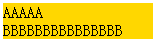
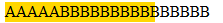

无
Webkit 渲染引擎中 NOBR 标签与其他标签紧密相连在某些情况下会导致部分内容无法换行。
无法换行的内容会对预期布局造成破坏。
| Safari Chrome |
|---|
观察以下代码：
<div style="width:150px;background:gold"> <div> <span style="float:
left;">AAAAA</span> </div> <div><nobr><span>BBBBBBBBBBBBBBBBB</span></nobr></div> </div>
在各浏览器中的表现：
| IE6 IE7 IE8 Firefox | Safari Chrome |
|---|---|
|  |  |
可以看到在 Chrome Safari 内当容器空余空间无法呈现 B 元素内容时，由于紧密连接的 NOBR 标记和 DIV 标记的作用导致 B 元素内容不换行溢出容器。
但是在其它浏览器内则解释的很正常，NOBR 作用仅限制在 B 元素所在的 SPAN 标记范围中，而不是错误限制它的父 DIV 标记不换行显示。
我们把这个代码再稍作修改，在 </nobr> 和 </div> 之间加入一个空格：
这样处理后在所有浏览器中均显示如下：
| IE6 IE7 IE8 Firefox Safari Chrome |
|---|
这是 WebKit 的 Bug。
<div style="width:150px;background:gold"> <div> <span style="float:
left;">AAAAA</span> </div> <div><nobr><span>BBBBBBBBBBBBBBBBB</span></nobr></div> </div>
在 NOBR 闭合标记之后加入一个英文空格即可解决不换行问题。
| 操作系统版本: | Windows 7 Ultimate build 7600 |
|---|---|
| 浏览器版本: |
IE6
IE7 IE8 Firefox 3.6 Chrome 4.0.302.3 dev Safari 4.0.4 Opera 10.51 |
| 测试页面: | nobr.html |
| 本文更新时间: | 2010-07-12 |
Webkit NOBR 换行